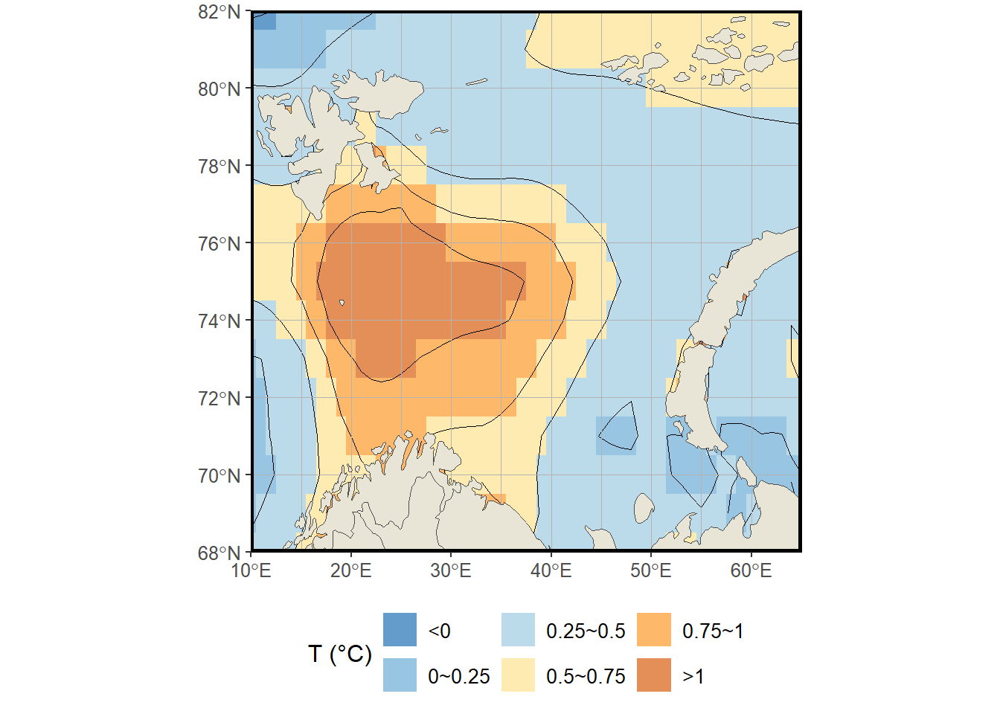
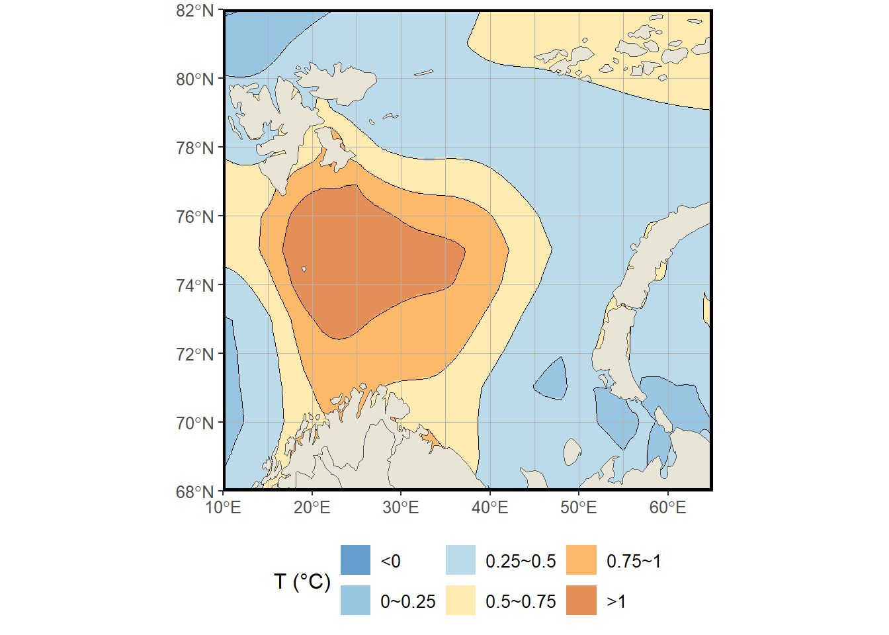

# ОЧИСТКА РАБОЧЕЙ СРЕДЫ И ЗАГРУЗКА БИБЛИОТЕК --------------------------------
rm(list = ls()) # Очистка среды от предыдущих объектов
# Загрузка необходимых библиотек:
library(dplyr) # Для манипуляций с данными
Присоединяю пакет: 'dplyr'Следующие объекты скрыты от 'package:stats':
filter, lagСледующие объекты скрыты от 'package:base':
intersect, setdiff, setequal, unionlibrary(sf) # Для работы с пространственными даннымиLinking to GEOS 3.13.1, GDAL 3.11.0, PROJ 9.6.0; sf_use_s2() is TRUElibrary(ggplot2) # Для построения графиков
library(rnaturalearth) # Для получения географических данных
library(terra) # Для работы с растровыми даннымиterra 1.8.60library(metR) # Дополнительные функции для визуализации
# УСТАНОВКА РАБОЧЕЙ ДИРЕКТОРИИ -----------------------------------------------
setwd("C:/SUPERPIC/") # Замените на актуальный путь к вашим данным
# ПАРАМЕТРЫ ОБЛАСТИ ИССЛЕДОВАНИЯ ---------------------------------------------
xmin <- 10 # Минимальная долгота (границы Баренцева моря)
xmax <- 65 # Максимальная долгота
ymin <- 68 # Минимальная широта
ymax <- 82 # Максимальная широта
# ПАРАМЕТРЫ РЕСЭМПЛИНГА ------------------------------------------------------
new_res <- 0.1 # Новое разрешение в градусах после передискретизации
# 1. ЗАГРУЗКА ИСХОДНЫХ ДАННЫХ -------------------------------------------------
# Чтение данных из Excel-файла
NEMO <- readxl::read_excel("diffTemp.xlsx", sheet = "diffTemp")
# Создание датафрейма с координатами и температурными данными
df <- data.frame(
longitude = NEMO$Lon,
latitude = NEMO$Lat,
TEMP = NEMO$dif
)
# 2. ПОДГОТОВКА ИСХОДНЫХ ДАННЫХ ДЛЯ ВИЗУАЛИЗАЦИИ ------------------------------
# Фильтрация данных по области исследования и категоризация температур
DF <- as.data.frame(df, xy = TRUE, na.rm = TRUE) %>%
filter(
longitude >= xmin, longitude <= xmax,
latitude >= ymin, latitude <= ymax
) %>%
mutate(
TEMP_cat = cut(
TEMP,
breaks = c(-Inf, 0, 0.25, 0.5, 0.75, 1, Inf),
labels = c("<0", "0~0.25", "0.25~0.5", "0.5~0.75", "0.75~1", ">1"),
include.lowest = TRUE
)
)
# 3. ЗАГРУЗКА ГЕОГРАФИЧЕСКИХ ДАННЫХ -------------------------------------------
# Получение данных о береговых линиях мира
world <- ne_countries(scale = 50, returnclass = "sf") %>%
st_transform(4326) %>% # Преобразование в WGS84
st_wrap_dateline() # Коррекция линии перемены дат
# Создание координатной сетки
graticule <- st_graticule(
lat = seq(ymin, ymax, 2), # Шаг по широте: 2 градуса
lon = seq(xmin, xmax, 5), # Шаг по долготе: 5 градусов
datum = st_crs(4326) # Система координат
)
# 4. НАСТРОЙКА ЦВЕТОВОЙ СХЕМЫ -------------------------------------------------
# Цвета для отрицательных температур (холодные тона)
cool_colors <- c("#2171b5", "#6baed6", "#9ecae1")
# Цвета для положительных температур (теплые тона)
warm_colors <- c("#fee391", "#fe9929", "#d95f0e")
# Объединенная палитра
palette <- c(cool_colors, warm_colors)
# 5. ПОСТРОЕНИЕ ГРАФИКА С ИСХОДНЫМ РАЗРЕШЕНИЕМ --------------------------------
# Создание карты с исходными данными (низкое разрешение)
plot_lowres <- ggplot() +
# Отображение данных в виде растровых плиток
geom_tile(data = DF, aes(x = longitude, y = latitude, fill = TEMP_cat), alpha = 0.7) +
# Добавление изолиний температур
geom_contour(
data = DF,
aes(x = longitude, y = latitude, z = TEMP),
breaks = c(0, 0.25, 0.5, 0.75, 1),
color = "black",
linewidth = 0.2
) +
# Добавление координатной сетки
geom_sf(data = graticule, color = "gray70", linewidth = 0.3) +
# Добавление береговых линий
geom_sf(
data = world,
color = "gray30",
fill = "#E8E5D6",
lwd = 0.3
) +
# Настройка области отображения
coord_sf(
xlim = c(xmin, xmax),
ylim = c(ymin, ymax),
expand = FALSE,
crs = st_crs(4326)
) +
# Настройка цветовой шкалы
scale_fill_manual(
name = "T (°C)", # Знак дельта вместо "?"
values = palette,
drop = FALSE,
na.value = "grey90"
) +
# Настройка внешнего вида графика
theme(
panel.background = element_rect(fill = "white"),
panel.border = element_rect(color = "black", fill = NA, linewidth = 1.5),
legend.position = "bottom",
axis.title = element_blank(),
text = element_text(size = 12),
legend.text = element_text(size = 10)
)
# Отображение графика
plot_lowres
# 6. ПРОЦЕДУРА РЕСЭМПЛИНГА ----------------------------------------------------
# Создание исходного растра из данных
r <- rast(df, type = "xyz", crs = "EPSG:4326")
# Создание целевого растра с новым разрешением
target <- rast(
extent = ext(c(xmin, xmax, ymin, ymax)),
resolution = new_res,
crs = "EPSG:4326"
)
# Выполнение ресэмплинга с билинейной интерполяцией
r_resampled <- resample(r, target, method = "bilinear")
# 7. ПОДГОТОВКА РЕСЭМПЛИРОВАННЫХ ДАННЫХ ---------------------------------------
# Преобразование растра в датафрейм для ggplot2
TEMPERATURE <- as.data.frame(r_resampled, xy = TRUE, na.rm = TRUE) %>%
filter(
x >= xmin, x <= xmax,
y >= ymin, y <= ymax
) %>%
mutate(
TEMP_cat = cut(
TEMP,
breaks = c(-Inf, 0, 0.25, 0.5, 0.75, 1, Inf),
labels = c("<0", "0~0.25", "0.25~0.5", "0.5~0.75", "0.75~1", ">1"),
include.lowest = TRUE
)
)
# 8. ПОСТРОЕНИЕ ГРАФИКА С ВЫСОКИМ РАЗРЕШЕНИЕМ ---------------------------------
# Создание карты с ресэмплированными данными
final_plot <- ggplot() +
geom_tile(data = TEMPERATURE, aes(x = x, y = y, fill = TEMP_cat), alpha = 0.7) +
geom_contour(
data = TEMPERATURE,
aes(x = x, y = y, z = TEMP),
breaks = c(0, 0.25, 0.5, 0.75, 1),
color = "black",
linewidth = 0.2
) +
geom_sf(data = graticule, color = "gray70", linewidth = 0.3) +
geom_sf(
data = world,
color = "gray30",
fill = "#E8E5D6",
lwd = 0.3
) +
coord_sf(
xlim = c(xmin, xmax),
ylim = c(ymin, ymax),
expand = FALSE,
crs = st_crs(4326)
) +
scale_fill_manual(
name = "T (°C)", # Знак дельта вместо "?"
values = palette,
drop = FALSE,
na.value = "grey90"
) +
theme(
panel.background = element_rect(fill = "white"),
panel.border = element_rect(color = "black", fill = NA, linewidth = 1.5),
legend.position = "bottom",
axis.title = element_blank(),
text = element_text(size = 12),
legend.text = element_text(size = 10)
)
# Отображение финального графика
final_plot
# 9. СОХРАНЕНИЕ РЕЗУЛЬТАТОВ ---------------------------------------------------
# Сохранение карты с высоким разрешением в файл
ggsave(
filename = "Temperature_Map.tiff",
plot = final_plot,
device = "tiff",
width = 17,
height = 15,
units = "cm",
dpi = 600,
compression = "lzw",
bg = "white"
)
# Дополнительно: сохранение карты с исходным разрешением
ggsave(
filename = "Temperature_Map_LowRes.tiff",
plot = plot_lowres,
device = "tiff",
width = 17,
height = 15,
units = "cm",
dpi = 600,
compression = "lzw",
bg = "white"
)